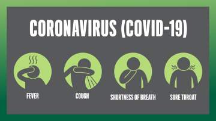

“How to stay safe from COVID19”
Clean your hands often
- Wash your hands often with soap and water for at least 20 seconds especially after you have been in a public place, or after blowing your nose, coughing, or sneezing.
- If soap and water are not readily available, use a hand sanitizer that contains at least 60% alcohol. Cover all surfaces of your hands and rub them together until they feel dry.
- Avoid touching your eyes, nose, and mouth with unwashed hands.
Avoid close contact
- Avoid close contact with people who are sick
- Put distance between yourself and other people if COVID-19 is spreading in your community. This is especially important for people who are at higher risk of getting very sick.
Take steps to protect others
Stay home if you’re sick
- Stay home if you are sick, except to get medical care. Learn what to do if you are sick.
Cover coughs and sneezes
- Cover your mouth and nose with a tissue when you cough or sneeze or use the inside of your elbow.
- Throw used tissues in the trash.
- Immediately wash your hands with soap and water for at least 20 seconds. If soap and water are not readily available, clean your hands with a hand sanitizer that contains at least 60% alcohol.
Wear a facemask if you are sick
- If you are sick: You should wear a facemask when you are around other people (e.g., sharing a room or vehicle) and before you enter a healthcare provider’s office. If you are not able to wear a facemask (for example, because it causes trouble breathing), then you should do your best to cover your coughs and sneezes, and people who are caring for you should wear a facemask if they enter your room. Learn what to do if you are sick.
- If you are NOT sick: You do not need to wear a facemask unless you are caring for someone who is sick (and they are not able to wear a facemask). Facemasks may be in short supply and they should be saved for caregivers.
Clean and disinfect
- Clean AND disinfect frequently touched surfaces daily. This includes tables, doorknobs, light switches, countertops, handles, desks, phones, keyboards, toilets, faucets, and sinks.
- If surfaces are dirty, clean them: Use detergent or soap and water prior to disinfection.